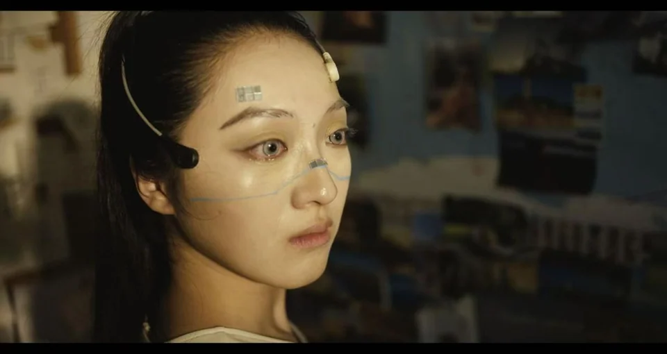
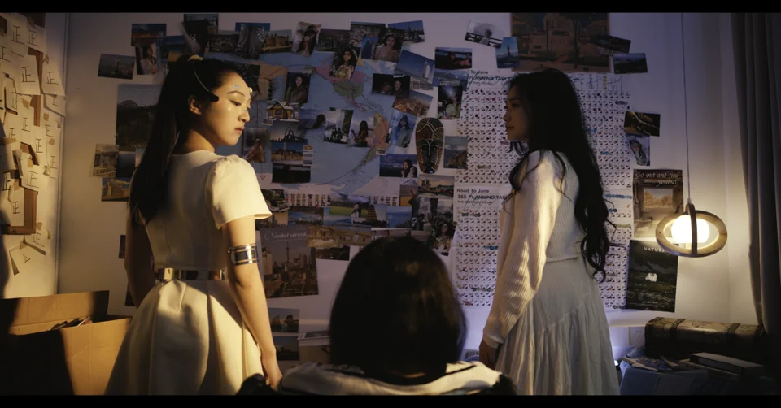
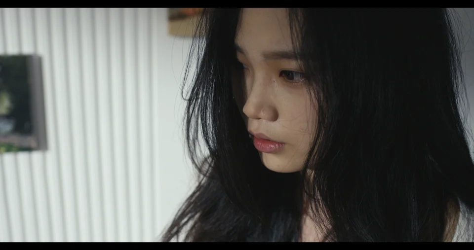

《一千零一夜》
关键词：人工智能、生命尊严、自主死亡（已拍摄）
一句话故事
在看护机器人1001的帮助下，一个植物人完成肉体的自杀，灵魂的新生。
成片静帧



故事梗概
女孩林渺因一场车祸成为植物人，被安置在幸福社区。社区为她配备了尚在测试阶段的看护机器人——1001。故事以林渺的“灵魂体”视角展开，讲述她与机器人1001共同度过1001天的日常，以及她寻求解脱与尊严的挣扎。
每天清晨，1001准时拉窗帘、放音乐、清洁、喂食、推她晒太阳、做康复运动、睡前讲《一千零一夜》的故事（永远停在“第1001个新娘”的悬念处）。林渺的灵魂体与床上毫无反应的躯体并存。她厌恶这机械重复的生活，多次尝试自杀：想拿抽屉里的刀、拧开窗台的农药、用尖装饰物扎自己、要求被水淹死、让1001喂过量药物……但每次都被1001以笨拙又执着的方式阻止——或被五花大绑，或被喂成维生素而非安眠药，或将生毒食材煮熟。
林渺千方百计想求死，1001却不断“精进”自己的照顾方式。一次，1001主动安排了老同学潇潇的电话和翻看旧相册的环节，试图唤起林渺对生活的留恋。林渺识破了机器人的计算，却出于“成全”对方的用心，违心地说出“我不想死了”。但很快她坦白：自己每分每秒都在被伤害，请求有尊严地离开。
1001最终理解了“成全”选择尊重而非强行挽留。在第一千零一天夜晚，1001为林渺换上干净睡衣、梳好头发、喂下药物（安眠药），讲完《一千零一夜》真正的结局：国王与桑鲁卓幸福地生活在一起。故事结束，床上的林渺安然死去。
创作阐述
《一千零一夜》的创作灵感来源于两个看似矛盾却日益交织的社会议题：人工智能照护技术的飞速发展，以及人类对“有尊严地离去”的持续追问。
“1001”这个数字，取自《一千零一夜》中那个用讲述延续生命的经典故事——宰相之女桑鲁卓每晚讲一个故事却不说结局，以此延缓死亡。在我们的故事里，机器人被命名为“1001”，它每日为植物人林渺重复着相似的照料流程，睡前也永远讲着同一段没有结局的故事。然而最后，当“1001天”真正来临，故事被讲完了，死亡也随之降临。这种互文关系，既是对经典文学的致敬，也是对其命题的翻转：当初桑鲁卓用讲述对抗死亡；而在这里，故事的终结恰恰成全了死亡。
在现实生活中，长期照护失能患者的家庭、机器人伦理、安乐死合法化等话题不断引发争论。我们无意给出道德判断，而是希望通过林渺与1001这对特殊的关系来探讨一个更本质的问题：当生命只剩下痛苦与拖累，不放手是爱，放手是不是一种更深的爱？
通过一个“被允许死亡”的故事，让观众重新思考活着的意义——有时候，放手不是放弃，而是最深的理解。
4.完整剧本
《一千零一夜》
序幕 动画
画面上出现心电图的标志。
心电图显示：一个女孩——一辆车——一场车祸——女孩倒下——出了很多血——医院——女孩的大脑碎了——女孩躺在床上——一双眼睛——一双眼睛流着泪——社区志愿服务（红十字）——一台机器人——1001——抱住女孩——一管管食物——一粒粒药——推着轮椅晒太阳——看雪花屏幕——童话故事书——小鸟飞下又坠落——花朵开放又枯萎——鱼儿沉入水底——夜晚满天星星——女孩瞳孔一点点碎掉
音频
（1001的声音）
古时候有个叫萨桑的岛国。国王怀疑王后有不贞行为，于是就杀掉了她。从此以后，国王每天都要娶一个新娘，第二天早晨就把新娘杀死。就这样国王一连娶了1000个女子，杀了1000个女子——
宰相的女儿桑鲁卓为了救父亲和国内年轻的姐妹，她毅然要求进宫。桑鲁卓说自己已经想好了应对国王的办法，这个办法就是——
诶哟，（慢慢地说）到了睡觉的时间了，只能明天再讲了，晚安。
场景一 日 内 房间卧室
屋子里漆黑一片，有脚步挪移到窗户边。
（窗外视角）机器人1001拉开了窗户。
1001
早安！阳光暖融融，今天又是活力满满的一天！
1001移动开。林渺走过来。
林渺
（翻白眼）
狗屎！谁让你拉窗帘的，晃死我了。
机器人向前移动然后突然转身面向镜头，看起来像与林渺面对面一问一答。
1001
亲爱的林渺，我是1001很高兴为你服务。
林渺
很不高兴被你服务。
1001
让我们用一段美妙的音乐开启早晨。
（机器人播放音乐，播放四秒后）
林渺
三、二、一
1001
（与林渺异口同声）
当前歌曲为vip点播歌曲，继续播放请充值会员。
林渺
别折腾了，再让我睡会儿吧。
1001
好的林渺——（停顿片刻）歌曲已播放完毕，我将为你做清洁工作。
机器人走开。林渺无奈地摇摇头，走进屋内。
林渺站在躺在床上的自己身边，盯着自己熟睡的脸，没有血色的脸。
站着的林渺长长地叹口气。
林渺
就是你，林渺，太阳都晒屁股了，还要赖着不起吗？
机器人给林渺翻身扎头发，林渺嘴巴微微动，眼神呆滞，口水顺着嘴巴流下来。
机器人扎完头发后给林渺戴上了一个红色的发夹。
机器人1001走进来给林渺洗脸刷牙。机器人1001掰开嘴巴。
林渺
轻点儿！
机器人刷牙。
林渺
怎么感觉最近你又晒黑了。
1001
请放心，在我的照顾下，你一定会长命百岁的。
林渺
在你的陪伴下，我一定会死不瞑目的。
1001
抱歉，我不明白——
机器人机械地摇摇头。
机器人给林渺翻身，林渺嘴巴一张一合。林渺扭曲干燥的双手，萎缩的双脚。
林渺
蠢蛋。
林渺踢了一脚机器人，自顾自地坐在一边看着它。
1001
哎呀，尿不湿满了，对不起我的提示系统好像出现了问题——我现在就为你更换。
林渺
从第十五个月零二十一天开始，你每天都这么说。
1001
清洁工作已完毕，你想吃点东西吗？——好的，今天为你准备的是胡土鸡泥——你最喜欢这个搭配了对吗？ 表示肯定你就点头，否定你就摇头，没反应代表默认——好的，你默认了，我去准备
1001转身出去。
林渺
不喜欢，我不想吃。
坐在桌子上数小羊头的林渺下一秒嘴巴就被塞进来一根针管。
机器人把针管已经塞进了床上林渺的嘴里。
林渺在一边反胃。
林渺
被打碎的胡萝卜土豆鸡肉泥是世界上最恶心的食物，吃起来就像是没牙的老太太从嗓子眼里抠出来的食物残渣，又臭又恶心！
1001
今天还给林渺准备了面粉、鸡蛋、奶油，糖的混合物。
1001拿出一块蛋糕，喂到林渺嘴里。
林渺
（嘴角沾着奶油）
为什么？
1001
因为这是我来到这儿的1000天，我很高兴，照顾林渺。
1001对着林渺扭动步伐，播放音乐。
林渺
笨蛋，照顾我有什么值得高兴的。
林渺把手里的小羊头撒在桌子上，站起来走出屋子，身后机器人还在跳着，林渺走出屋子的瞬间，门关上了。周围光跟着变化，环境发生变化。
此处为一个长镜头，通过调度交代人物。
林渺
我叫林渺，今年二十八岁，无父无母无伴侣，独身生活在幸福社区五单元一零零一号，两年前的一个早晨，我为了救下一名横穿马路的小孩——
林渺走到门口玄关挂着一面锦旗：
锦旗
上联：车流之中拉一把
下联：保住全家香火情
横批：恩人请受我一拜
林渺
变成了植物人。
林渺走到鞋柜上给绿萝浇水。
林渺
幸福社区出于人道主义关怀，给我这个三无人士安排了看护机器人1001。
林渺走过去，1001出现在门口。
林渺
这个笨家伙是一台高度拟人化的机器人，目前还在测试阶段。
1001走进屋子里，先自己撞了半天的墙角。
1001
对不起，请让一下，对不起，请让一下——
林渺
笨蛋配废物，从某种程度上来讲，我们俩还真是绝配。
林渺把1001从墙角救出来，面朝厕所。
林渺
一千天前，他来到了我的家，接管了我的生活，从此之后，我彻底没有一天的好日子了。
1001播放音乐。
林渺
早上六点，他会准时播放一段永远只能听开头的音乐。然后开始清洁工作——
1001从厕所出来往卧室走，两只手每个手指缝里都夹着一个清洗工具。
林渺
七点，准时开始吃饭。难吃的胡土鸡泥
机器人在厨房拿出两个针管一样的食物。
林渺
八点开始晒太阳。
机器人把林渺从卧室推到阳台。
林渺走到阳台边坐下。
林渺
晒太阳的同时，它会去打扫卫生。
1001
对不起，你让一下——对不起，请你让一下
1001在房间里磕磕碰碰的声音。
林渺
就这样，它经常一打扫就是一上午，等他想起我的时候，我早就已经晒得两面微焦。
1001
哎呀，忘记了，有点缺水，立刻补水。
1001给轮椅上的林渺喂水。
林渺
接下来就到了我最讨厌的运动时间。
1001推着林渺来到客厅中心。
1001
请你向我这样做，我就向你这样做。
1001拉着林渺的手开始锻炼。
说话的林渺也跟着锻炼。
摄像机摇向窗外，外面天黑了。
林渺
好累，终于要迎来今天的最后一个环节了。
1001
林渺，我来给你读一个故事好吗？表示肯定你就点头，否定你就摇头，没反应代表默认——好的——
1001开始读故事。
1001
古时候有个叫萨桑的岛国。国王怀疑王后有不贞行为，于是就杀掉了她。从此以后，国王每天都要娶一个新娘，第二天早晨就把新娘杀死。就这样国王一连娶了1000个女子，杀了1000个女子轮到第1001位新娘时——
林渺
每天都是一样的故事，而且每天都没有结局。
1001
桑鲁卓说自己已经想好了应对国王的办法，这个办法就是——
诶哟，（慢慢地说）到了睡觉的时间了，只能明天再讲了，晚安。
机器人给林渺盖好被子，离开房间。
黑漆漆的房间里，林渺看着床上的自己，轻轻抚摸自己的脸，头发。
林渺
林渺，我认真地问你一个问题，表示肯定你就点头，否定你就摇头，没反应代表默认——
你想离开吗？
屋子里一片寂静，床上的林渺毫无反应。
场景二 日 内 房间（1001天）
林渺躺在床上，睁开眼睛。
林渺眼睛转向左下方，左边靠墙边的书桌抽屉里有刀。
林渺（灵魂体）走到桌边用力想打开抽屉，但是怎么也拉不开。
床上的林渺面部抽搐两下，眼睛看向左上。
林渺（灵魂体）发现窗台上有花的农药，林渺拿起农药瓶子想要拧开，手上使了十足的力气。
床上的林渺手纹丝不动。林渺（灵魂体无奈地坐在床边），轻轻叹了口气。
机器人1001打开门，一道光晃到灵魂体林渺的眼睛。
1001
亲爱的林渺，1001很高兴为你服务。让我们用一段美妙的音乐开启早晨。
（开始播放音乐）
林渺捂住眼睛，再睁开，注意到床头柜上有一个尖的圆锥形的装饰摆件，眼睛里再次燃起希望的光，
1001
继续播放请充值会员，歌曲已播放完毕，我将为你做清洁工作。
机器人离开屋子。
站着的林渺在一边加油鼓劲。
林渺
林渺，就现在，把手抬起来，一切就结束了！你就再也不用见这个呆瓜机器人了。
林渺趴在床头激动地示意床上的自己，此刻在林渺眼中装饰物金光闪闪。
床上的林渺眼睛眨几下，嘴巴微微张开。
林渺
对！就是这样，把手抬起来，一切就要结束了。
床上的林渺手轻轻抬起，装饰物金光闪闪，林渺（灵魂体）期待的表情交替两个来回。
突然装饰物的光消失了，门口机器人1001把光源挡住，走进室内。
1001
让我们开始清洁吧——
1001拿着手绢去给林渺擦嘴。
床上的林渺刚才一番挣扎毫无作用，此刻她顺着嘴角流下一行涎水，流在头发上。
林渺失望落寞地坐在一边的椅子上，背对着床和1001.
林渺
1001，帮我洗个头吧。
1001
检测到林渺对我的指令，请稍等。
1001走出房间，屋子里静悄悄的。
1001回到房间，拿着一盆水，帮林渺洗头发。
1001
（此处1001说一段傻傻的对话）
林渺坐在位置上发呆，此刻床上的林渺和坐着的林渺头发上都顶着一头的泡沫。突然坐着的林渺顺着脸淌下水。
林渺
1001（咕噜咕噜）你注意一点，你要呛死我吗？
1001
对不起，我不是要呛死你，这项工作我需要精进。
林渺
你说什么？
林渺突然站起来。
1001
这项工作我需要精进。
林渺
不，第一句。
1001
对不起，我不是要呛死你。
林渺
就是这个，1001我觉得这水流不够大，我要最大的水流，往我脸上冲，一直冲，我头痒，使劲冲！
1001
好吧。
1001拿起大水壶，林渺躺好已经准备好了，水哗啦一声，但是林渺的脸上干干净净。
原来是1001拿挡板挡住。
林渺
哪来的？
1001
刚刚精进了一下这项工作。
林渺
拿走！
1001
对不起，我不理解。
林渺
听不懂人话吗？拿走，把水往我脸上冲，往鼻子、嘴里灌，淹死我能明白吗？
1001
（保持不动）
明白了——
场景三 卧室 日 内
下一个镜头，林渺被被子捆得五花大绑。
1001
检测到林渺有伤害自己的想法，采取紧急措施。
林渺（灵魂体）一蹦一蹦地到1001身边。
林渺
松开！
1001
让我们开始吃饭吧。
林渺
我不吃。
1001往林渺嘴里喂饭。
床上的林渺嘴巴张着，随着饭往下一口一口咽。
林渺（灵魂体）坐在旁边拿着针管也在吃。
1001
你也很爱吃是吧——胡土鸡泥由多种食物搭配制作，营养均衡，好吃健康。
林渺
难吃的让鸡都死不瞑目。
1001
你是不喜欢这个搭配吗？那把它换成胡土猪泥怎么样、胡土牛泥、胡土虾泥——
林渺
打住！什么我都不想吃！
1001
那你想吃什么呢？请告诉我。
林渺眼睛一转。
林渺
我想吃什么都可以？
1001
是的。
林渺
你确定？
1001
没错——
林渺
那就好办了！
场景四 日 内 厨房
林渺坐在轮椅上，机器人在厨房忙碌。
1001
按照你的要求，食材已购买完成。
林渺灵魂体打量着台面上的食物。
豆角，发芽的土豆，鸡蛋和菜叶之类一把花生米。
林渺
不错不错。
1001
接下来该怎么做。
林渺
很简单，只有三步！
林渺进入自己描述的幻想里，自己亲自开始操作。
林渺
第一步，把榨汁机的盖子打开，第二步，把所有东西都放进去，豆角、土豆、蘑菇、菜叶还有最重要的吃了就浑身长大包的花生。第三步，按下榨汁机。一杯新鲜出炉的送我走小果汁就大功告成了！
幻想中，林渺美滋滋地喝下去就晕倒，死掉了。机器人冲过来抢救她，大喊
1001
林渺，林渺！
林渺被机器人叫醒，现实世界，林渺靠着厨房门傻乐，清醒过来后开始指挥。
林渺
把这些都放进去，然后榨汁，快！我迫不及待了。
1001
好的，正在为您烹饪，请稍候。
林渺（灵魂体）美滋滋地走出厨房，坐下，餐桌对面是坐在轮椅上的林渺。
林渺
马上就能解脱了。
林渺回头看向餐桌对面。
林渺
下辈子做三有人员好不好，有爸爸妈妈，有健康的身体，还有——（看向厨房）有个笨蛋机器人常添麻烦！点头肯定，摇头不。
对面的林渺没有反应
林渺
那你就是默认了。
对面的林渺没有反应，双眼无神。
厨房的门突然打开。1001拿着餐盘闪亮登场。
1001
林渺，你要的豆土蘑豆来了！
1001在餐桌前，把菜郑重地放在林渺面前。此刻餐桌两端，都有一个餐盘。
1001打开餐盘，里面是一杯固体的混合物，冒着热气。
林渺
怎么是这个样子的。
1001
嘿嘿——人类智库中的数据显示生的土豆、豆角、蘑菇吃了会中毒于是我——
厨房中1001把豆角和切成块的土豆放进锅里煮熟/蒸熟。
蘑菇煮熟。
林渺
（画外音）
那花生呢？
1001
（画外音）
根据你外卖备注信息，我了解到你对花生过敏，于是我将花生换成了黄豆，保证你排气通畅。
1001把黄豆和若干食材放进榨汁机，打碎后，倒出来就是饭桌上的一坨食物。
林渺
谁允许你自做主张，拿回去重做，我就要吃生的。
1001
对不起我不明白——
林渺
我让你拿回去重做，我要吃生的。
1001
对不起，我不明白。
林渺（灵魂体）扶额无奈，一个勺子突然塞进了她的嘴里，林渺嚼嚼嚼。
林渺的表情逐渐扭曲，面部特写。
场景五 日 内 阳台
面部特写，林渺一脸生无可恋。
林渺坐在阳台晒太阳，1001把窗户打开。
1001
今天的阳光好充沛，让我们打开窗户透透气吧。
1001开窗后移回林渺身边，帮她做运动。
林渺（灵魂体）走到窗户前，向下望去。看向1001
林渺
让我们跳下窗户透透气吧。
1001笨拙地抬起头扭头看向窗户，再看向轮椅上的林渺。
1001
检测到林渺有伤害自己的想法，采取紧急措施。
下一个镜头，林渺被裹成蚕蛹一样坐在椅子上。
林渺（灵魂体）也被绑得五花大绑，在地上躺着，无力地蠕动几下靠在墙边。
林渺
（小声嘟囔）
松开，给我松开——松开啊，松开
1001在屋子里打扫卫生。经常撞到东西。
1001
对不起——请让一下。对不起，请让一下——
林渺
松开。
1001
对不起
一阵提示音响起。
1001
（叮叮，提示音）
林渺，该吃药了。
1001走向林渺。
1001把药放进林渺的嘴里，用小勺子一勺一勺水松服。
1001
好了，今日药物已服用。
1001转身拿起清扫工具要继续打扫。靠在墙边的林渺（灵魂体）眼珠一转大声地喊住1001.
林渺
1001，回来！今天的药还没吃。
1001停住脚步又回到林渺对面。
1001
记录显示十秒前已服用，
林渺
我自己吃没吃还不知道吗？快！赶紧把药喂给我。
1001
好吧——
1001再次喂药。
1001回去工作。
林渺
1001，我今天没吃药！
1001又回来，在离开。
林渺
1001，吃药！
1001回来。
林渺
1001!
这样来来回回几次，林渺（灵魂体）心满意足地靠在墙边等待死亡。
林渺
得亏1001是个不长脑子的笨蛋，这下子，我还怕死不成。
林渺靠在墙边美滋滋地等死，不一会儿就等睡着了，再醒过来，窗外已是黄昏接近傍晚，身上的束缚已经没有了，林渺迷迷糊糊地摸了摸自己。
林渺
我这是死了，还是没死啊——
卧室里面传来动静，1001在给林渺喂晚饭。
林渺（灵魂体）失望地叹口气冲进屋里。
林渺
1001，下午你喂的是什么药？
1001停下手中喂饭的动作。
1001
嘿嘿，是维生素C，维生素b，维生素d，维生素e，维生素——
林渺
（失望的）
谁让你喂这个的？
1001
你让我喂药，但是今天的处方药已经服用了，我又不能违抗林渺的命令，只能补充维生素，嘿嘿——1001聪明吧！
1001原地打圈跳舞，鼓掌
林渺灵魂体在一边脸越来越黑。
林渺
（小声地）
停下！
1001还在鼓掌。
林渺
我说让你停下！
林渺灵魂体冲1001喊。
房间里安静了一瞬间，床上的林渺眨眨眼，没有任何反应。
1001
对不起，是我做错什么了吗？
林渺
（沉默一瞬）
全都错了。
1001
对不起，我不明白。
林渺
我也不明白呀，为什么你要浪费电池在我这种一辈子都动不了嘴眼歪斜的废物身上。
林渺（灵魂体）看向自己躺在床上的脸。1001停顿片刻——
1001
照顾好林渺是我应该做的，不用客气！我们继续吃饭吧。
1001瞬间恢复开心状态，拿着勺子继续喂饭。
林渺长长地叹口气，眼角掉下一滴泪。
1001用手轻轻擦掉林渺眼角的泪。
1001
你看起来，好悲伤，为什么？
林渺
1001，救救我吧。
1001看向林渺，原地打转。
电话铃突然响起来——在空荡的房间回荡。
1001
林渺，有电话打进来了，我来为你转接——
1001带着电话走进来，坐在林渺床边。
1001
来自潇潇的电话。
林渺（灵魂体）疑惑地坐到1001身边看着电话上的名字。
林渺
转语音留言。
1001
（犹豫一小下）
已转接——
潇潇
（电话）
喂，渺渺，我是程潇，你小学同桌！我找了你好久都没消息，今年春天回老家，才问到的，你还记得小学门口的那个小饭桌吗？去年我回老家，特地去了一趟，大姨竟然还开着呢，小时候咱俩放学后就在那儿吃饭做作业，有一次我橡皮没带，问你借，你盯着我看了半天，我以为你不想借呢，没承想你直接咬下来一半，看着那块沾满口水的橡皮我一下子就不想用了，哎呀，可恶心了！渺渺呀，你这些年过得好吗？我很想你，有空记得给我回电话！
1001
需要回拨吗？
林渺
好！
1001
正在为您回拨。
电话嘟嘟响起来，林渺（灵魂体拿起手机）
潇潇
喂！渺渺是你吗？
林渺（灵魂体）张大嘴巴想要说话，却发不出声音，切回到病床上，电话就放在林渺身边，但是林渺无法沟通。
潇潇
你在吗？怎么不说话——
林渺
挂了吧。
机器人挂断电话。
1001
好的，已为您保存程潇的联系方式，默认分组为朋友，林渺，她很关心你。
林渺
是啊，潇潇是我小时候最好的朋友，两个人在一块叽叽喳喳能说一整天，可惜现在，只有她一个人可以说话了。
1001注意到林渺失落的情绪。
1001
林渺，你会好起来的，不要不开心了，来做点儿什么吧，今天打扫时在书架上发现了这个，我们一起看一看吧。
机器人翻动着相册示意给躺着的林渺。
林渺（灵魂体）抱着相册坐在床上对着机器人。
翻动几页后，林渺的手突然顿住。
1001
他们是谁
林渺
这是爸爸，这是妈妈，我小时候他们经常领我去南山公园看孔雀，每次妈妈出门都会带红手绢。
1001
这个呢？为什么林渺你的脸上红红的。
林渺
小时候爸妈不知道我花生过敏，那天给我煮盐水花生，我浑身起疹子，他们吓坏了。
1001
1001记住了，以后不会让林渺吃到一点点花生。
林渺翻相册的手顿了顿。
1001
这是林渺上小学吗？
林渺
（翻动速度加快）
对，还有初中、高中、大学，研究生——这些都是我。这也是我（林渺看向病床上的自己）
1001
林渺，你的生活好彩色，1001真为你骄傲。
林渺
是好精彩，笨蛋。
1001
对不起，我会努力精进的。
林渺
1001.谢谢你，我不想死了。
1001
警报已解除，林渺恢复健康的想法。1001太开心了，让我们一起来听歌曲吧。
1001原地开始打转，跳舞，然后鼓掌，中途会碰到很多东西。
1001
对不起，你让一下！
林渺坐在床上笑1001。
林渺
1001，这一千零一天，你把我照顾得很好，家里也被你整理得井井有条，还有，胡土鸡泥味道很好！林渺撒谎了，你一点都不笨，你是最棒的机器人。
1001
这是我应该做的，我还可以做得更好。
林渺
我感谢你在我最脆弱的时候陪在我身边这么久，久到有的时候我会忘记你是一个机器人，和你一起生活，我很幸福。
1001
林渺幸福等于1001幸福。
林渺
抽屉里有我剩下的存款，你去买最新款的电池好好地饱餐一顿，然后美美地睡上一觉，醒了以后——
1001
醒了以后，1001带你做新学的广播操，吃好吃的胡土鸡泥。
林渺
醒了以后，你可能会有新的主人，如果可以，能不能不要忘记我。
1001
为什么？不明白。
林渺
1001，救救我吧。
1001翻开林渺的身子，身下腰上有一片红色的褥疮，因为长时间缺乏锻炼，林渺手指扭曲，胳膊腿有不同程度的爆皮。
林渺躺在床上流着口水，口水巾上有水渍，身下的小垫子上有浅黄色的尿渍。
林渺
你看到了，你每天都可以看到，我现在生活不能自理，不死不活的苟延残喘，当生病只剩下痛苦和拖累，选择体面地离开，是一种成全。
1001
什么是成全？
林渺
刚刚的电话是你安排的，拿相册也是你计算出来的。你想用这些挽留我，安稳我的情绪对吧。
1001
是的。
林渺
我知道这一切都是你安排的，可是我还是说出你期待的回答，违心地说出我不想死了。
1001
为什么？
林渺
因为成全，我理解你的用心，听从你的安排，我不想让你失望。
1001
成全1001.
林渺
对，这就叫成全。
1001
我明白了。
林渺
如果可以，我想要有尊严地离开。
林渺看向抽屉，抽屉里有安眠药。
1001
对不起，我不能伤害林渺。
林渺
如果这叫伤害的话，那我的心，我的灵魂每分每秒都被伤害着。
1001
我明白了——对不起。
林渺笑着看向1001.
场景六 夜 内 房间
1001给林渺系扣子（新睡衣）
1001给林渺梳好头发。
1001喂林渺吃药。
林渺躺在床上，1001坐在旁边讲故事。
1001
国王每天都要娶一个新娘，第二天早晨就把新娘杀死。就这样国王一连娶了1000个女子，杀了1000个女子——
宰相的女儿桑鲁卓为了救父亲和国内年轻的姐妹，她毅然要求进宫。桑鲁卓说自己已经想好了应对国王的办法，这个办法就是每天都给国王讲一个故事，但是不说结局，就这样国王舍不得杀了她，直到第一千零一天，桑鲁卓决定向国王坦白，而国王也深深爱上了她，于是二人，幸福地永远生活在一块。
1001合上书页。
1001
故事的结局讲完了，林渺，晚安，我们明天见。
床上的林渺安然死去。
【彩蛋】
场景七 日 内 白墙
1001被重启。
画外音
您签收一下。
画外音
（女）
成色还蛮新的嘛，你确定格式好了？
画外音
（男）
没问题的，机器这东西一个按键下去，什么前尘往事，统统都清零，不放心我帮你开机，你验验。
男人手按1001的后脖子。1001逐渐抬头睁开眼睛。
1001
1001——
（最后两个字只出嘴型不出声）
林渺
——完——